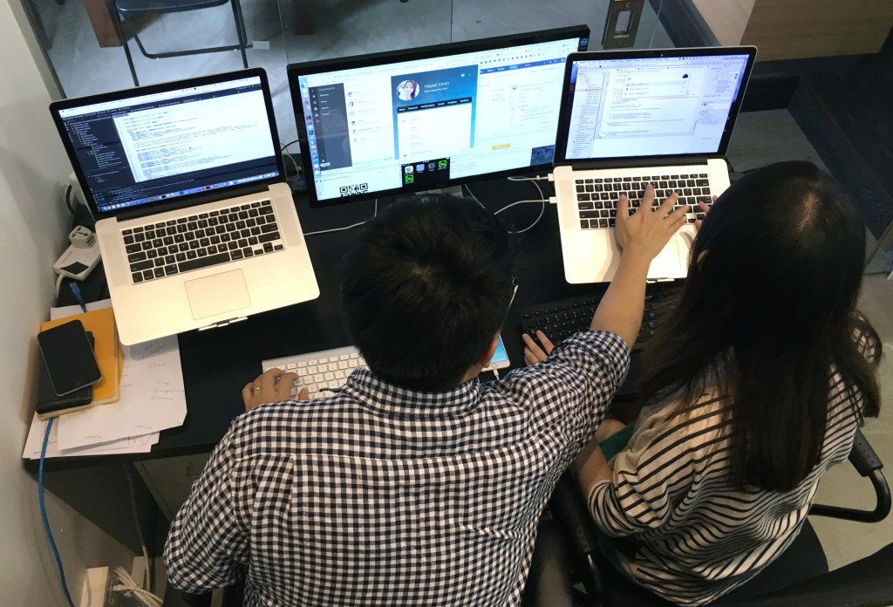

Intro Activity
Create an issue in your project repo for one thing that needs to get done for your project. Make sure you create a to do list of what will need to happen to complete this task. This should be a simple task that could be completed in class today.
5 Minute Presentations About Your Project
You have 5 minutes to discuss your project and go through any code you have started. Discuss any challenges and opportunities you have with your started.
We did this at our first class
What are thoughts on it?
Variations on Pair Programming

Which methods work for us?
Let's Write Code for a Project That Isn't Ours
We're going to pair up and you will write code for a project that's not yours. Let's work on the issue we created in the in intro. Halfway through we'll switch.
Presentations
Let's see what we built today.